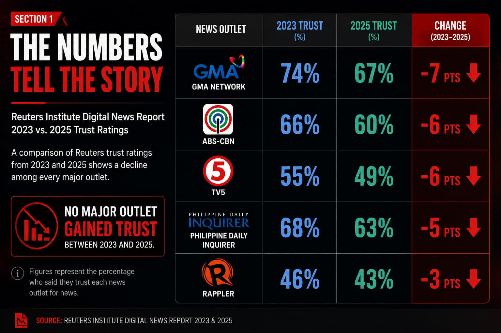
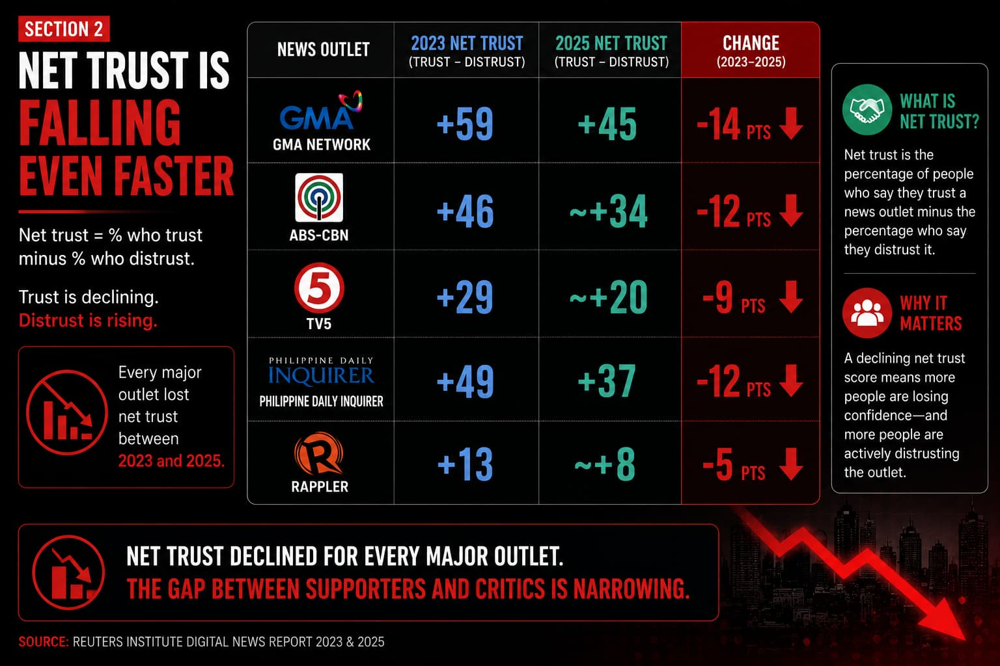
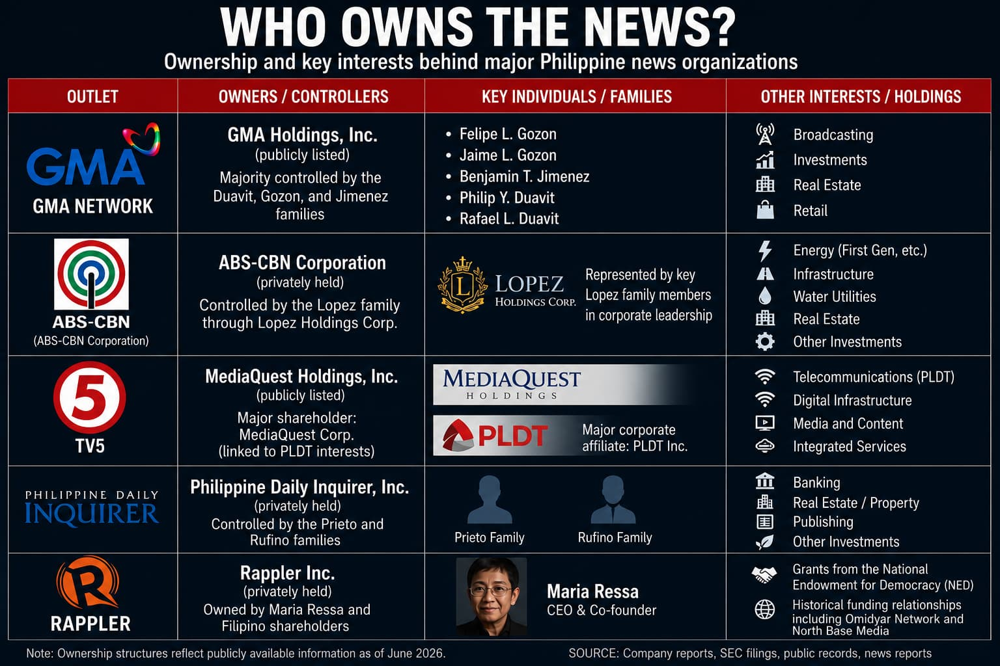

Quantifying the Decline
A comparison of Reuters trust metrics for 2023 and 2025 demonstrates a consistent pattern.

No major organization recorded an increase.
Despite variations in ownership structure, editorial positioning, and audience composition, all outlets registered declines.
Viewed individually, the decreases are moderate. Viewed collectively, they indicate a broader erosion of confidence in established media institutions.
Net Trust: A Sharper Indicator
Trust ratings alone provide an incomplete picture.
A more revealing measure is net trust—the difference between the share of respondents who trust an outlet and those who actively distrust it.

The contraction in net trust suggests that active skepticism is outpacing passive disengagement.
The credibility premium historically enjoyed by established organizations appears to be shrinking.
Every major Philippine news organization included in the Reuters dataset experienced a decline in both trust and net trust between 2023 and 2025.
Why Is Trust Declining?
The Reuters data measures trust. It does not identify the causes behind its decline.
Nevertheless, several explanations recur in public discussions about the widening trust gap between audiences and news organizations.
- Political Polarization — As political divisions deepen, news coverage is increasingly evaluated through a partisan lens.
- The Social Media Challenge — Traditional media no longer serves as the primary gatekeeper of information.
- The Substance Problem — Critics argue that pressure for clicks, engagement, and constant content has shifted attention toward viral stories and political drama at the expense of deeper reporting.
- The Narrative Alignment Problem — Some audiences increasingly perceive major news organizations as echoing the perspectives of governments, corporations, and international institutions rather than independently scrutinizing them.
- Ownership and Elite Connections — Greater public awareness of ownership structures, funding sources, and institutional relationships has prompted questions about media independence.
No single explanation fully accounts for the decline.
More likely, the trend reflects a combination of factors operating simultaneously.
What is clear is that trust appears to be becoming more difficult to maintain across the industry.
Who Owns the News?
Public trust is influenced not only by what institutions report, but also by who audiences believe stands behind them.
The Philippines' largest news organizations are connected to some of the country's most influential business, corporate, and institutional networks.

Ownership alone does not determine editorial outcomes, nor does it automatically imply influence over coverage.
Yet as audiences become more aware of ownership structures and funding relationships, questions about independence inevitably follow.
Whether those concerns are justified is open to debate.
Their existence, however, is undeniable.
They point to a broader concern: how close should institutions that report on power be to institutions that exercise it?
Media and Power
That question became particularly relevant in June 2026 when PTV-4 General Manager Lino Cayetano announced plans to explore partnerships between the state-run broadcaster and GMA, ABS-CBN, and TV5.
Media partnerships are not unusual. Shared election coverage, disaster communications, and technical cooperation are common throughout the industry.
Yet the announcement arrived at a moment when trust in major news organizations was already declining.
To some observers, it reinforced a broader perception that the boundaries between media institutions, government, and corporate power are becoming increasingly blurred.
Whether that perception is fair is ultimately beside the point.
Trust is shaped not only by institutional actions, but by how those actions are interpreted by the public.
The Trust Crisis
The Reuters findings do not suggest that Filipinos have abandoned traditional journalism.
Major news organizations continue to reach millions of people each day, and trust levels remain net positive across the industry's leading outlets.
Yet the broader trend is difficult to ignore.
Every major organization examined in the survey experienced a decline in trust.
Every major organization saw its net trust score fall.
The causes remain contested. The direction does not.
The challenge facing Philippine journalism is therefore not simply competition from social media platforms or alternative content creators.
It is the gradual erosion of public confidence.
Because once trust is lost, recovering it is often far more difficult than losing it.